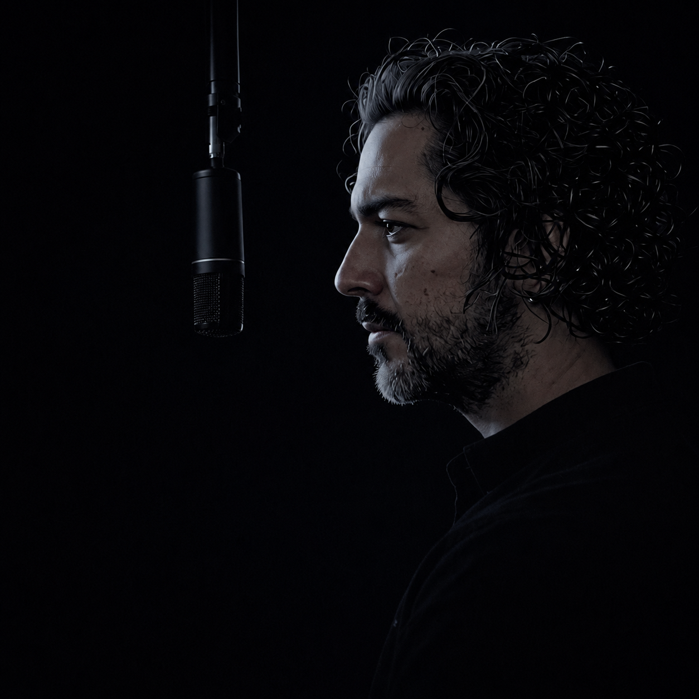

Es lo que estoy haciendo desde adentro, para mí.
De mi individualidad para el colectivo.
Para hacer consciencia.
Para abrir preguntas.
Para mostrar quién soy.
Hay un antes y un después. No como narrativa de superación — sino como hecho real. Desde Adentro es la voz de después. La que habla con autoridad, no con arrogancia. La que sabe la diferencia porque pagó el precio de aprenderla.
"No grabamos para convencer. Grabamos para volver a escuchar. Cuando lo humano aparece, lo demás se ordena."
Aquí hay conversaciones que nacen de la escucha real. Pensamientos que emergen en el momento justo — no guionados, no editados para sonar bien. Reflexiones que tienen valor porque vienen de haber vivido algo, no de haberlo estudiado solamente.
Va de la individualidad al colectivo. Parte de una sola voz — la mía — y llega a la pregunta que es de todos. Porque todos somos todos. Y eso se escucha mejor desde adentro.
Desde Adentro es la nueva temporada. El nombre cambió porque el proceso cambió. Ya no se trata de desaprender — se trata de hablar desde lo que queda después.
Antes de poder hablar desde adentro, hubo que desaprender. Dos temporadas. Treinta episodios. Un año de proceso al aire — honesto, imperfecto, real. Eso es lo que hay aquí. El camino que llevó hasta donde estoy parado hoy.
Un año de grabación continua. Proceso real, no performativo.
Veintinueve conversaciones. Veintinueve momentos donde lo humano apareció.
Ningún episodio cerró con respuesta definitiva. Eso era el punto.
Seguí el canal para no perderte el regreso.